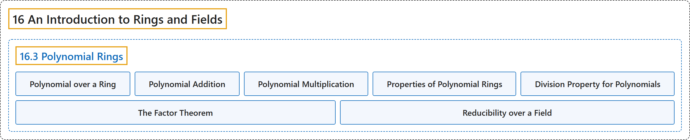

16.3 Polynomial Rings
Classification

Glossary
| Term | Definition | 中文翻译 | Source |
|---|---|---|---|
| 16.3 Polynomial Rings 多项式环 |
(No definition) | （无定义） | Doerr & Levasseur, n.d., section 16.3 |
| Polynomial over a Ring 环上的多项式 |
"Let \([R; +, \cdot ]\) be a ring. A polynomial, \(f(x)\text{,}\) over \(R\) is an expression of the form" | 设 \([R; +, \cdot ]\) 为环。\(R\) 上的多项式 \(f(x)\)， 是形如下式的表达式 | Doerr & Levasseur, n.d., Definition 16.3.1 |
| Polynomial Addition 多项式加法 |
"Let \(f(x) =a_0 + a_1 x+a_2 x^2+ \cdots +a_m x^m\) and \(g(x) =b_0 + b_1 x+b_2 x^2+ \cdots +b_n x^n\) be elements in \(R[x]\) so that \(a_i \in R\) and \(b_i\in R\) for all i. Let \(k\) be the maximum of \(m\) and \(n\text{.}\) Then \(f(x) + g(x) =c_0 + c_1 x+c_2 x^2+ \cdots +c_k x^k\text{,}\) where \(c_i=a_i+b_i\) for \(i = 0, 1, 2, \ldots, k\text{.}\)" | 设 \(f(x) =a_0 + a_1 x+a_2 x^2+ \cdots +a_m x^m\) 与 \(g(x) =b_0 + b_1 x+b_2 x^2+ \cdots +b_n x^n\) 为 \(R[x]\) 的元素，即对所有 i 有 \(a_i \in R\) 且 \(b_i\in R\)。设 \(k\) 为 \(m\) 与 \(n\)。 的最大值。则 \(f(x) + g(x) =c_0 + c_1 x+c_2 x^2+ \cdots +c_k x^k\)， 其中对 \(i = 0, 1, 2, \ldots, k\)。 有 \(c_i=a_i+b_i\)。 | Doerr & Levasseur, n.d., Definition 16.3.3 |
| Polynomial Multiplication 多项式乘法 |
"Let \(f(x) =a_0 + a_1 x+a_2 x^2+ \cdots +a_m x^m\) and \(g(x) =b_0 + b_1 x+b_2 x^2+ \cdots +b_n x^n\text{.}\) Then" | 设 \(f(x) =a_0 + a_1 x+a_2 x^2+ \cdots +a_m x^m\) 与 \(g(x) =b_0 + b_1 x+b_2 x^2+ \cdots +b_n x^n\)。 则 | Doerr & Levasseur, n.d., Definition 16.3.4 |
| Properties of Polynomial Rings 多项式环的性质 |
"Let \([R; +, \cdot]\) be a ring. Then: \(R[x]\) is a ring under the operations of polynomial addition and multiplication. If \(R\) is a commutative ring, then \(R[x]\) is a commutative ring. If \(R\) is a ring with unity, \(\textup{ 1}\), then \(R[x]\) is a ring with unity (the unity in \(R[x]\) is \(1 + 0x + 0 x^2 + \cdots\)). If \(R\) is an integral domain, then \(R[x]\) is an integral domain. If \(F\) is a field, then \(F[x]\) is not a field. However, \(F[x]\) is an integral domain." | 设 \([R; +, \cdot]\) 是环。则：在多项式加法和乘法运算下，\(R[x]\) 是环。若 \(R\) 是交换环，则 \(R[x]\) 是交换环。若 \(R\) 是有单位元 \(\textup{ 1}\) 的环，则 \(R[x]\) 是有单位元的环（\(R[x]\) 中的单位元是 \(1 + 0x + 0 x^2 + \cdots\)）。若 \(R\) 是整环，则 \(R[x]\) 是整环。若 \(F\) 是域，则 \(F[x]\) 不是域。但 \(F[x]\) 是整环。 | Doerr & Levasseur, n.d., Theorem 16.3.8 |
| Division Property for Polynomials 多项式的带余除法性质 |
"Let \([F; +, \cdot ]\) be a field and let \(f(x)\) and \(g(x)\) be two elements of \(F[x]\) with \(g(x) \neq 0\text{.}\) Then there exist unique polynomials \(q(x)\) and \(r(x)\) in \(F[x]\) such that \(f(x) = g(x) q(x) + r(x)\text{,}\) where \(\deg r(x) < \deg g(x)\text{.}\)" | 设 \([F; +, \cdot ]\) 为域，\(f(x)\) 与 \(g(x)\) 为 \(F[x]\) 的两个元素且 \(g(x) \neq 0\)。 则存在 \(F[x]\) 中唯一的多项式 \(q(x)\) 与 \(r(x)\)，使得 \(f(x) = g(x) q(x) + r(x)\)， 其中 \(\deg r(x) < \deg g(x)\)。 | Doerr & Levasseur, n.d., Theorem 16.3.13 |
| The Factor Theorem 因式定理 |
"Let \([F; +, \cdot ]\) be a field. An element \(a \in F\) is a zero of \(f(x) \in F[x]\) if and only if \(x - a\) is a factor of \(f(x)\) in \(F[x]\text{.}\)" | 设 \([F; +, \cdot ]\) 为域。元素 \(a \in F\) 是 \(f(x) \in F[x]\) 的零点，当且仅当 \(x - a\) 是 \(F[x]\)。 中 \(f(x)\) 的因子。 | Doerr & Levasseur, n.d., Theorem 16.3.14 |
| Reducibility over a Field 域上的可约性 |
"Let \([F; +, \cdot]\) be a field and let \(f(x) \in F[x]\) be a nonconstant polynomial. \(f(x)\) is reducible over \(F\) if and only if it can be factored as a product of two nonconstant polynomials in \(F[x]\text{.}\) A polynomial is irreducible over \(F\) if it is not reducible over \(F\text{.}\)" | 设 \([F; +, \cdot]\) 为域，\(f(x) \in F[x]\) 为非常数多项式。\(f(x)\) 在 \(F\) 上可约，当且仅当它可分解为 \(F[x]\)。 中两个非常数多项式之积。若多项式在 \(F\) 上不是可约的，则它在 \(F\) 上不可约。 | Doerr & Levasseur, n.d., Definition 16.3.17 |
References
Doerr, A., & Levasseur, K. (n.d.). Applied discrete structures. Retrieved October 28, 2026, from https://discretemath.org/ads/index-ads.html